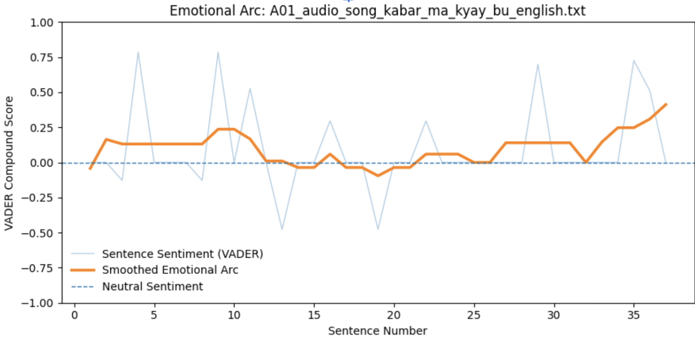
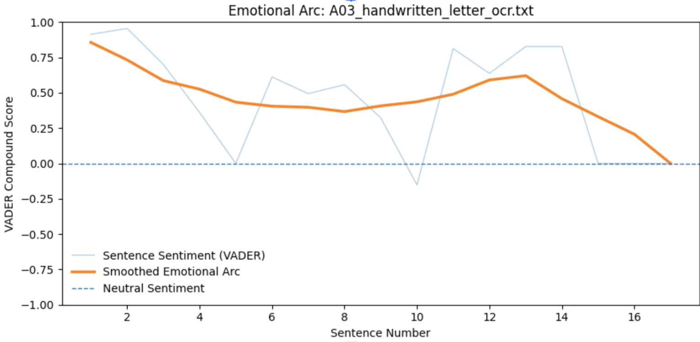
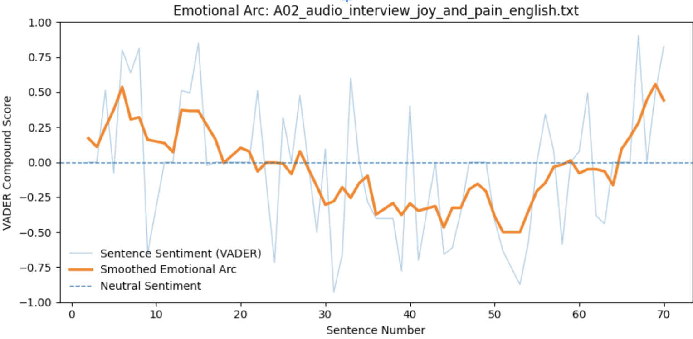
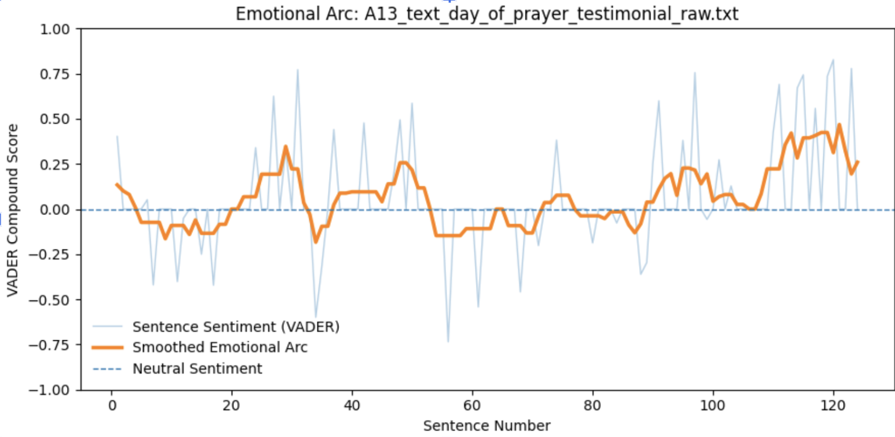

Sentiment Analysis
This page examines emotional patterns across several artifacts in the archive using computational sentiment analysis. Close reading remains the primary method, but automated scoring can still reveal patterns that are easy to miss on first pass.
Four artifacts were analyzed: a protest song, a field interview with three members of the Karenni resistance, a handwritten recovery letter, and a testimony recorded during a day of prayer gathering. Each text was divided into sentences and scored using the VADER sentiment model. Gemini 2.5 Flash Lite was also used to classify sentences as positive, negative, or neutral.
The light blue lines in the charts represent sentence-level sentiment scores. The orange line represents a rolling average used to smooth short fluctuations and reveal the broader emotional trajectory of each text.
Method and Quantitative Results
The four texts vary significantly in length, ranging from 17 sentences in the handwritten letter to 124 sentences in the day of prayer testimony. Average sentiment and agreement between the two models differed across the artifacts.
| Artifact | Sentences | Avg VADER Score | Gemini–VADER Agreement |
|---|---|---|---|
| Joy and Pain Interview | 70 | -0.0223 | 0.7143 |
| Day of Prayer Testimony | 124 | 0.0608 | 0.7419 |
| Handwritten Recovery Letter | 17 | 0.4628 | 0.8235 |
| Kabar Ma Kyay Bu Protest Song | 37 | 0.0923 | 0.5946 |
The handwritten letter produced the most positive average sentiment and the highest agreement between the two systems. The protest song produced the lowest agreement, suggesting that symbolic or lyrical language is harder for sentiment models to interpret consistently. The interview was the only artifact with a slightly negative average score, reflecting how often the speakers describe suffering and displacement.
Protest Song

The protest song Kabar Ma Kyay Bu shows sharp emotional shifts from line to line. Lyrics often combine grief, anger, and patriotic determination within the same phrases, which produces wide swings in the sentence-level scores.
Even so, the smoothed trend remains slightly positive overall. The song contains 37 sentences with an average VADER score of 0.0923 and the lowest agreement rate between the two systems. This disagreement likely reflects how symbolic language and metaphor complicate automated sentiment scoring.
The pattern reflects the role of protest music in resistance movements. References to violence and loss appear alongside lines about unity and remembrance, producing an emotional arc that moves between grief and determination.
Handwritten Recovery Letter

The handwritten letter shows the clearest emotional structure in the dataset. The early sentences express gratitude, faith, and relief during recovery, producing the strongest positive average sentiment score.
The letter contains 17 sentences and produced both the highest average VADER score (0.4628) and the strongest agreement rate between Gemini and VADER. This likely reflects the direct emotional language used throughout the text.
Later in the letter the tone shifts when the author mourns the death of a friend. This introduces a brief moment of grief before the letter returns to a more reflective tone near the end.
The numbers only show part of the story. Reading the letter directly gives fuller context for the testimony. Naw Gay wrote it while recovering from catastrophic violence and severe physical injury. In that setting, expressions of gratitude, prayer, and concern for others carry meaning that cannot be captured by a positive value on a sentiment graph alone.
Field Interview

The Joy and Pain interview produces a more uneven emotional pattern. Sentence scores shift rapidly as the speakers move between describing violence, displacement, and their work caring for others.
The interview contains 70 sentences and has a slightly negative average score of −0.0223. This reflects how often the speakers describe suffering, even while explaining their mission and expressing hope.
When the scores are smoothed, the pattern becomes clearer. The middle portion trends more negative as the speakers describe violence and hardship. Toward the end the sentiment rises again as they emphasize purpose and service.
Day of Prayer Testimony

The day of prayer testimony contains the largest number of sentences and produces the most detailed emotional arc. Descriptions of violence and displacement create negative spikes, while expressions of faith and solidarity create positive ones.
The testimony remains slightly positive, with an average score of 0.0608. The smoothed arc rises toward the end of the text, suggesting a narrative movement from hardship toward collective encouragement and prayer.
Interpretation
Across the archive, many artifacts move between suffering and hope. Negative spikes tend to appear when violence or loss is described, while positive spikes appear when speakers express faith, solidarity, or recovery.
The results also show that genre matters. Direct personal writing, such as the recovery letter, is easier for sentiment models to classify. More symbolic language, like protest songs, produces more disagreement between systems.
Sentiment analysis works best as a supporting tool rather than a final interpretation. The charts highlight patterns, but understanding those patterns still requires direct engagement with the artifacts.
Conclusion
Sentiment analysis makes it possible to visualize emotional patterns across texts that differ in length and form. It highlights recurring movements between grief, resilience, and faith across the archive.
Emotional meaning cannot be reduced to numerical scores. The most useful role of these tools is to direct attention back to testimony, where the people and experiences behind the archive remain central.